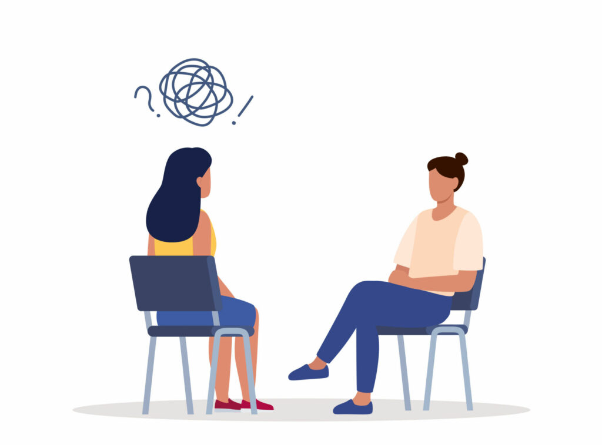

Sithija Hapuarachchi
My name is Sithija Hapuarachchi, and I am currently attending University of California Riverside. I have been studying psychology for 2 years, and I am aiming to attain my masters in psychology. I started to gain interest in the field around the end of high school, and have continued to work in psychology when transitioning into college. Science is a field that I have always had an interest in, and I have made many colleagues and friends in it. Psychology has gained my interest, since it is a science that involves human interaction, yet also dives into the most complex part of the human body; the brain. As I’ve done more research into psychology, the brain and its effect on human choices and actions has started to pique my own interest. Something so complex yet so machine-like has always been something I found interest in. Psychology is a field that I will continue to work in, and hopefully make new discoveries in.
I am currently 18, and I have many hobbies. I play tennis, enjoy music deeply, and love watching shows and movies. I consider myself a semi-social person, and I take a little to open up to people and befriend them. I think honesty and kindness are very important parts of not only human interaction, but education and work itself. Understanding how people react to things allows you to be more kind and understand others' experiences, and become more empathetic. I believe psychology is a great way to be more mindful of the person you are, and why people act certain ways. Psychology dives into how people work, and why sometimes, people act differently from others. Humans have a tendency to grow and love the norm, and despise and be unattractive to things that are different, especially others who act differently. Psychology opens the eye to why these people act differently, and why it’s okay to be like that. That is why psychology is such an important field of study to me, and why I relate to it so much.
I am a hard worker, and I am willing to work with others. However, I am able to also work with myself, and sometimes prefer doing that. My way of working is doing the easiest thing first, then slowly unpacking harder topics and obstacles, until I am able to explain it to myself and others. I think teaching a topic to another person is an extremely difficult task, but once it’s done, it is extremely rewarding and a great way to grow your knowledge. I believe reading is also very important, as it access new ways to use vocabulary and add more to what you think. Reading also delves into human creativity, and understanding how different people think and project their ideas to the real world. Applying all of these things to my work is how I become a better worker, and even more than that, a better person to myself and the people that I am surrounded by.
Experience
Employee
• Worked at a Tennis Club
• Volunteered for Psychology events
• Experience with biopsychology, and psychoanalysis
Teaching Assistant
• Ran sessions to help students learn about psychology
• Reviewed psychology essays
• Created educational content to help promote student mental health
• TA'd for over 250 students each academic quarter
Education
UC Riverside
University of California Riverside
University of California Riverside
Portfolio


